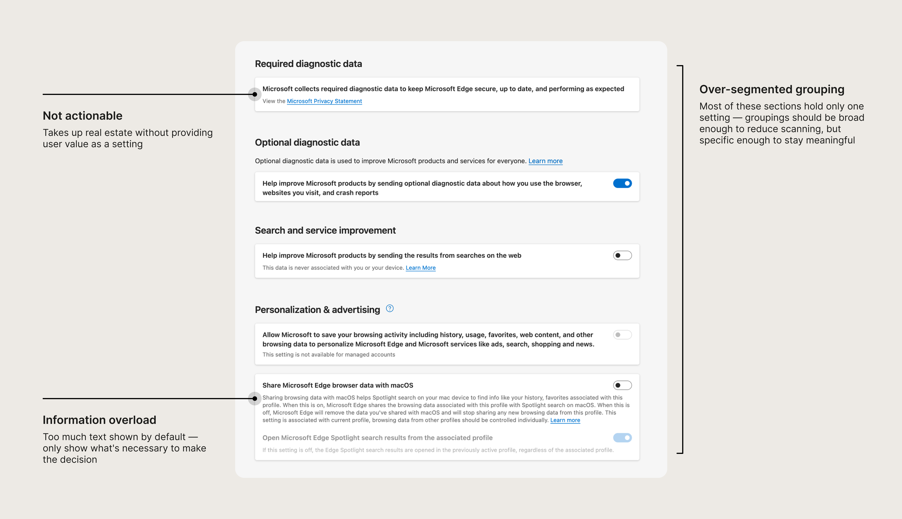
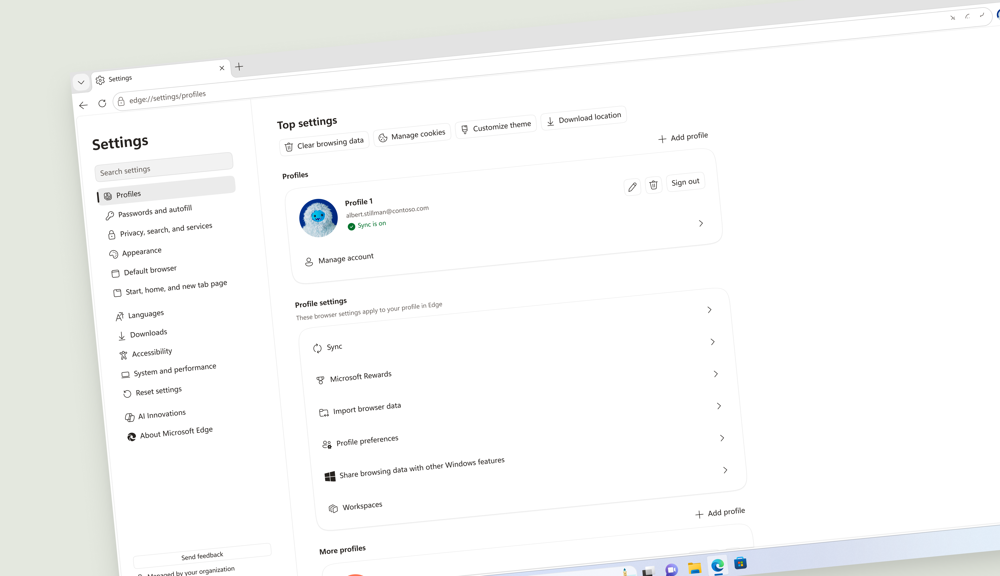
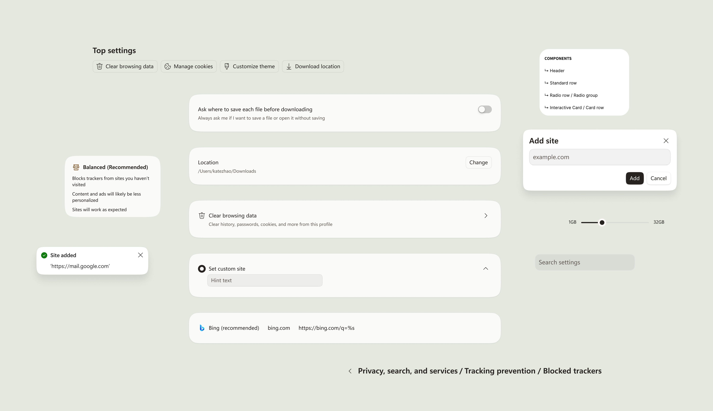
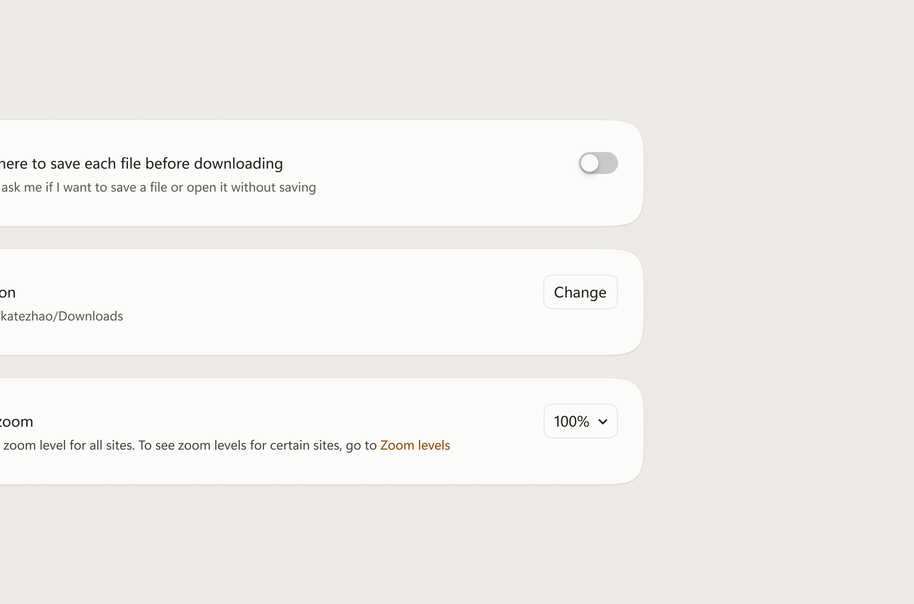
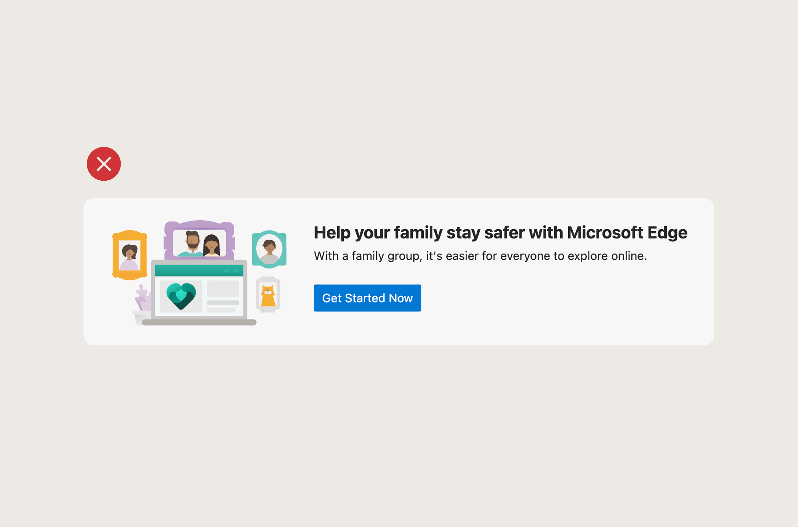

Problem
Research flagged settings as a churn signal. I found that both the experience and the underlying infrastructure were fragmented.
Settings had grown organically across teams with no shared system and no single owner — every team shipped features independently, with no regard for the holistic experience. The result was a surface that was hard for users to navigate and increasingly difficult to maintain.

Solution
A new component system and design framework — including principles and content standards — built in parallel with a platform migration to WebUI 2.0
I audited the full settings surface and rebuilt the component library from the ground up — creating a single, rationalized system that every team shipping into settings could build from. Alongside the redesign, I defined governing principles and content standards to ensure the surface stayed coherent as the product continued to grow.


Process
A heuristic evaluation of the entire surface revealed the systemic problems the redesign needed to solve. The audit led to three governing principles:
Progressive disclosure
Only show what's relevant to the user, when it's relevant
Action-oriented
Every setting must have a clear action attached to it
Clear, concise, unbiased
Settings should feel like a utility users can trust, not a product being sold to them


Impact
As the sole designer on this project, I owned the redesign end to end alongside one PM — onboarding over 60 engineers across feature teams onto the new framework and maintaining ownership of the surface going forward. The migration from React to WebUI 2.0 delivered 40% faster performance on high and mid-class machines and 70% faster on lower-end devices. For teams building in settings, the framework removes the guesswork — design decisions are already made, components exist, and the system is built to absorb future changes without regression.